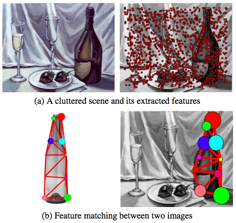
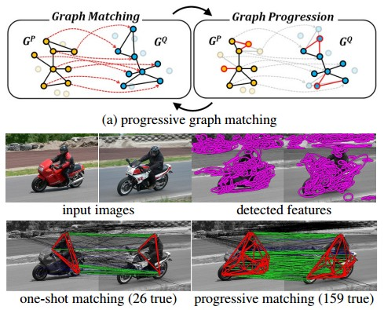
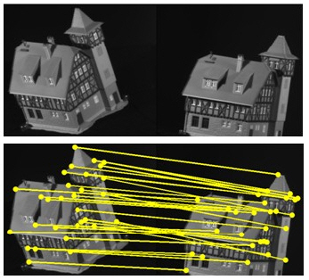
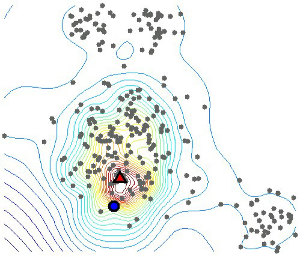
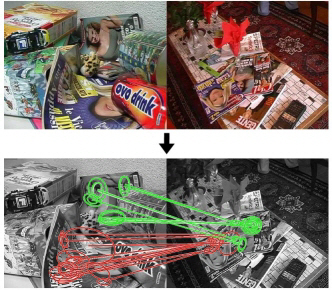
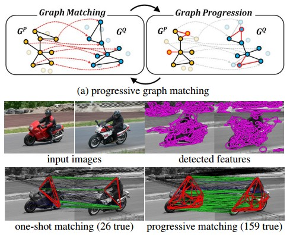
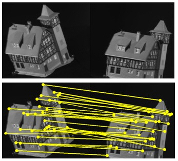
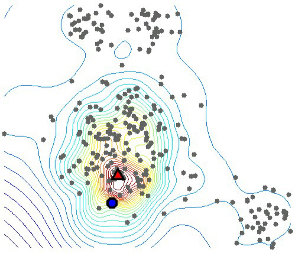
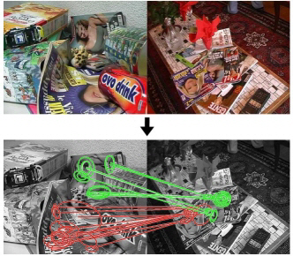
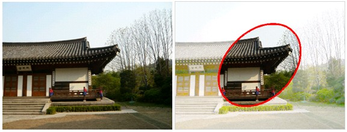

Finding Matches in a Haystack
[ Project page ]
Finding Matches in a Haystack: A Max-Pooling Strategy for Graph Matching in the Presence of Outliers [pdf]
Minsu Cho, Jian Sun, Olivier Duchenne, Jean Ponce,
IEEE Conference on Computer Vision and Pattern Recognition (CVPR) 2014 .

Learning graphs to match
[ Project page ]
Learning Graphs to Match [pdf]
Minsu Cho, Karteek Alahari, and Jean Ponce,
IEEE Conference on International Conference on Computer Vision (ICCV) 2013 .

[ Project page ]
Progressive Graph Matching: Making a Move of Graphs via Probabilistic Voting [pdf]
Minsu Cho and Kyoung Mu Lee, IEEE Conference on Computer Vision and Pattern Recognition (CVPR) 2012 .

[ Project page ]
Reweighted Random Walks for Graph Matching [pdf]
Minsu Cho, Jungmin Lee, Kyoung Mu Lee, The 11th European Conference on Computer Vision (ECCV) 2010.

[ Project page ]
Authority-Shift Clustering: Hierarchical Clustering by Authority Seeking on Graphs [pdf]
Minsu Cho and Kyoung Mu Lee, IEEE Conference on Computer Vision and Pattern Recognition (CVPR) 2010 .

[ Project page ]
Feature Correspondence & Deformable Object Matching via Agglomerative Correspondence Clustering [pdf]
Minsu Cho, Jungmin Lee, Kyoung Mu Lee, The 12th IEEE International Conference on Computer Vision (ICCV) 2009.
Demo code for highlighting elliptical ROI regions with contours. It's useful for visualizing affine interest regions.
Finding Matches in a Haystack
[ Project page ]
Finding Matches in a Haystack: A Max-Pooling Strategy for Graph Matching in the Presence of Outliers [pdf]
Minsu Cho, Jian Sun, Olivier Duchenne, Jean Ponce,
IEEE Conference on Computer Vision and Pattern Recognition (CVPR) 2014 .
Learning graphs to match
[ Project page ]
Learning Graphs to Match [pdf]
Minsu Cho, Karteek Alahari, and Jean Ponce,
IEEE Conference on International Conference on Computer Vision (ICCV) 2013 .

Progressive Graph Matching
[ MATLAB demo code ] (zip, 76MB)[ Project page ]
Progressive Graph Matching: Making a Move of Graphs via Probabilistic Voting [pdf]
Minsu Cho and Kyoung Mu Lee, IEEE Conference on Computer Vision and Pattern Recognition (CVPR) 2012 .

Reweighted Random Walk Matching
[ MATLAB demo code ] updated 30/05/2013 (zip, 35KB)[ Project page ]
Reweighted Random Walks for Graph Matching [pdf]
Minsu Cho, Jungmin Lee, Kyoung Mu Lee, The 11th European Conference on Computer Vision (ECCV) 2010.

Authority-Shift Clustering
[ MATLAB demo code ] (zip, 24KB)[ Project page ]
Authority-Shift Clustering: Hierarchical Clustering by Authority Seeking on Graphs [pdf]
Minsu Cho and Kyoung Mu Lee, IEEE Conference on Computer Vision and Pattern Recognition (CVPR) 2010 .

Deformable Object Matching via Agglomerative Correspondence Clustering
[ MATLAB demo code ] (zip, 45.5MB)[ Project page ]
Feature Correspondence & Deformable Object Matching via Agglomerative Correspondence Clustering [pdf]
Minsu Cho, Jungmin Lee, Kyoung Mu Lee, The 12th IEEE International Conference on Computer Vision (ICCV) 2009.
Miscellaneous
Code for Highlighting (Elliptical) ROI Regions
[ MATLAB demo code ] (zip, 0.3MB)Demo code for highlighting elliptical ROI regions with contours. It's useful for visualizing affine interest regions.